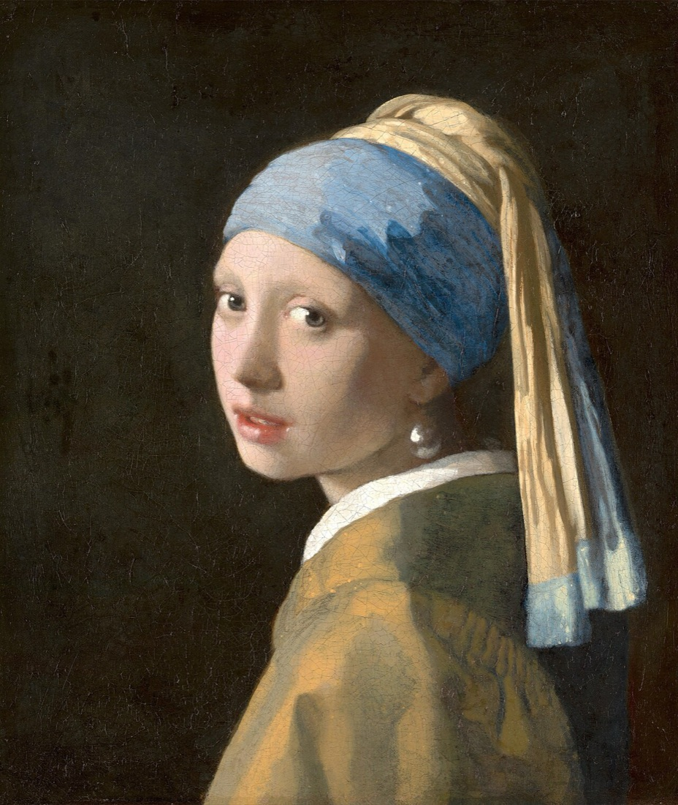
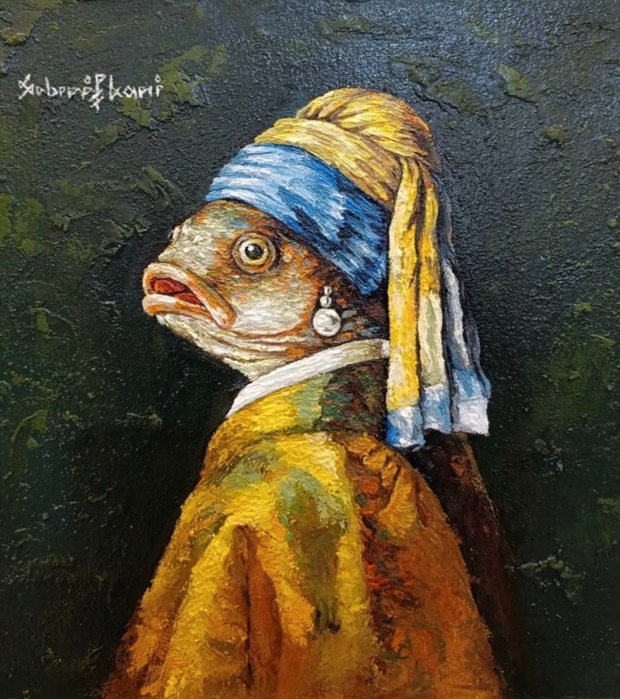

Modern ile çağdaş aynı şey değil
Günlük dilde “modern” ve “çağdaş” birbirinin yerine kullanılır, ama sanat tarihinde ikisi farklı dönemleri anlatır. Modern sanat kabaca 19. yüzyılın ikinci yarısından 1970'lere uzanan dönemi kapsar: empresyonistler, Picasso ve kübizm, soyut resim, pop art… Hepsi kendi zamanlarında “yeni”ydi ama bugün artık müzelerin tarih bölümünde duruyorlar.
Çağdaş sanat ise en basit hâliyle bizim zamanımızın sanatı: kabaca 1960'ların sonundan bugüne, çoğunlukla hâlâ yaşayan ve üreten sanatçıların işleri. Kesin bir başlangıç tarihi yok; çünkü çağdaş sanatı bir üslup değil, bir tavır birleştiriyor. O tavrın kökü ise biraz daha geriye gidiyor.
Her şey bir pisuvarla başladı (sayılır)
1917'de New York'ta, kim olursa olsun herkesin katılabileceği söylenen bir sergiye “R. Mutt” imzalı, ters çevrilmiş sıradan bir porselen pisuvar gönderildi. Eserin adı Çeşme'ydi ve arkasında Marcel Duchamp vardı. Pisuvar sergilenmedi; orijinali de kısa süre sonra kayboldu. Bugün elimizde kalan en önemli kanıt, fotoğrafçı Alfred Stieglitz'in çektiği bir fotoğraf.

Kamu malı, Wikimedia Commons
Peki bu kadar önemli olan ne? Duchamp pisuvarı yapmadı, sadece seçti. Böylece sanatın değerini ustalıktan ya da güzellikten alıp fikre taşıdı: Bir şeyi sanat yapan, sanatçının ona nasıl baktığı ve bizi nasıl baktırdığı olabilir mi? Bu soru, yarım yüzyıl sonra çağdaş sanatın neredeyse temel sorusu hâline geldi.
Çağdaş sanat çoğu zaman bir cevap vermekten çok, iyi bir soru sormaya çalışır.
Çağdaş sanatı tanımanın birkaç ipucu
Tek bir tarifi yok ama bugünün işlerinde sık karşılaşacağın bazı ortak noktalar var:
- Fikir önde: Eser bazen bir nesne değil, bir düşünce, bir talimat ya da bir deneyimdir.
- Malzeme sınırı yok: Yağlı boyanın yanında yerleştirme (enstalasyon), performans, video, ses, ışık, hatta koku ya da yiyecek kullanılabilir.
- İzleyici işin içinde: Bazı eserler, sen içinden geçince, dokununca ya da bir parçasını alıp götürünce tamamlanır.
- Dünyayla konuşur: Kimlik, göç, iklim, teknoloji, bellek… Çağdaş sanat gazetenin konularından kaçmaz.
- Geçmişle oynar: Sanat tarihini alıntılar, ters yüz eder, kendi zamanına çevirir.
Geçmişle konuşmak
Son maddeye güzel bir örnek, artini seçkisindeki bir iş. Johannes Vermeer'in 1665 civarında yaptığı İnci Küpeli Kız, dünyanın en tanınan portrelerinden biri. Seçkimizdeki ressam aynı türbanı, aynı omuz üstünden bakışı ve aynı inciyi bu kez bir balığa takıyor. Kalın, kabartılı fırça izleriyle hem bir saygı duruşu hem de tatlı bir şaka bu.

Mauritshuis, Lahey · Kamu malı

Çağdaş sanatçı için geçmiş bir müze vitrini değil, birlikte çalışılacak bir malzeme. İkisini yan yana koyduğunda yalnızca bir resmi değil, 350 yıllık bir sohbeti görüyorsun.
Türkiye'de çağdaş sanat
Türkiye'de çağdaş sanatın görünür hâle gelmesinde 1987'de ilk kez düzenlenen İstanbul Bienali'nin payı büyük. 2004'te açılan İstanbul Modern, ardından Arter ve SALT gibi kurumlar, bu sanatı geniş bir kitleyle buluşturdu. Bugün bağımsız sanat alanları, açık atölyeler ve elbette Instagram sayesinde yeni sanatçıları keşfetmek hiç olmadığı kadar kolay.
Bir eserin karşısında ne yapmalı?
Çağdaş sanatı “anlamak” için uzman olmak gerekmiyor. Birkaç basit soru yeterli:
- Ne görüyorum? Önce yorum yapmadan sadece bak: malzeme, renk, boyut, yerleşim.
- Neden bu malzeme? Sanatçı bunu neden boya yerine şekerle, ya da tuval yerine videoyla yapmış olabilir?
- Bana neyi hatırlattı? Bir anı, bir haber, bir başka eser…
- Künyeyi oku. Eserin adı ve yanındaki kısa metin çoğu zaman kapıyı aralayan anahtardır.
Ve en önemlisi: beğenmek zorunda değilsin. Bazı işler seni rahatsız eder, bazıları güldürür, bazıları da hiçbir şey hissettirmez. Hepsi bu sohbetin bir parçası. artini'de seçtiğimiz eserleri bu yüzden künyeleriyle, sanatçılarıyla birlikte gösteriyoruz: Bakmanın keyfini çıkar, gerisi kendiliğinden gelir.